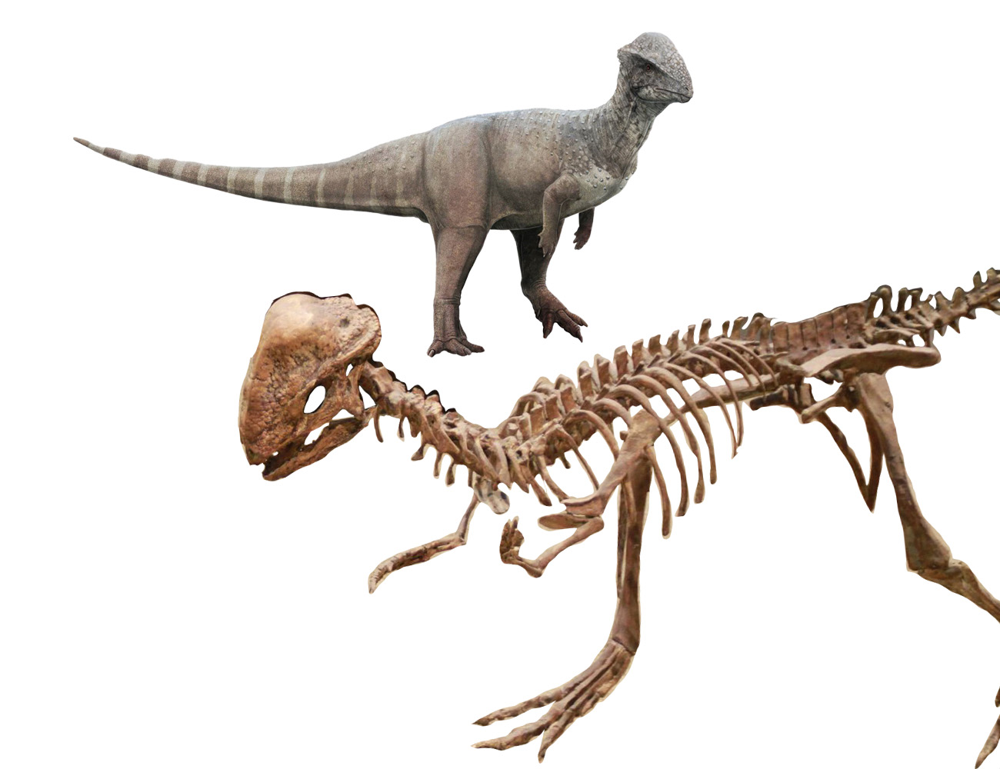
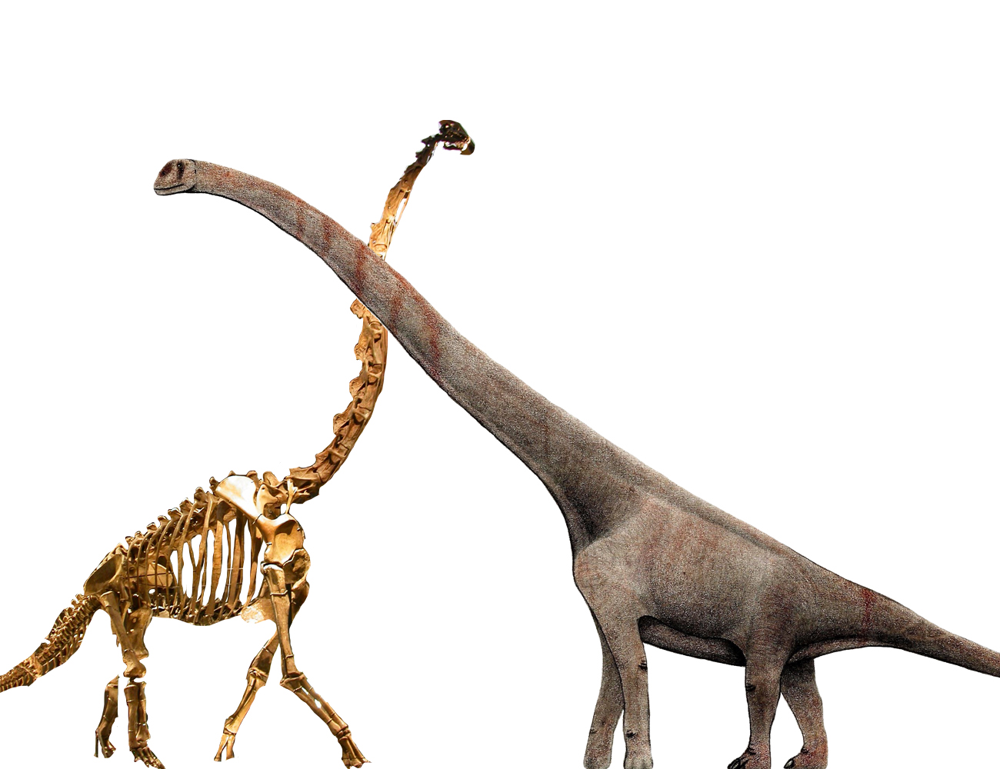
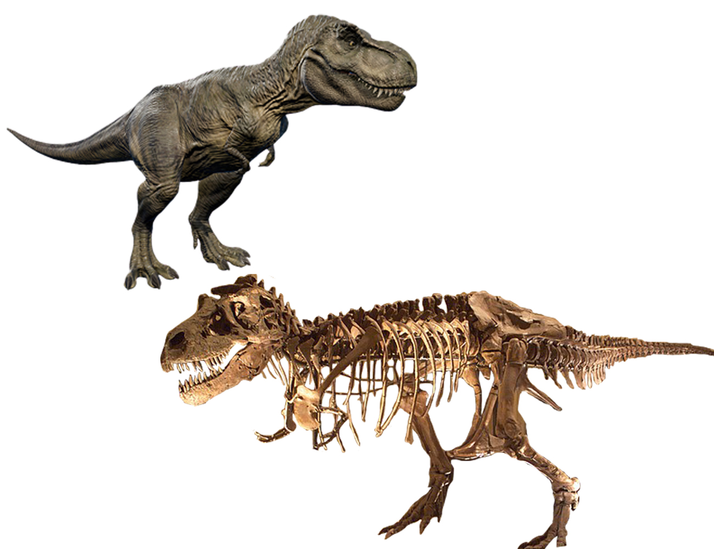
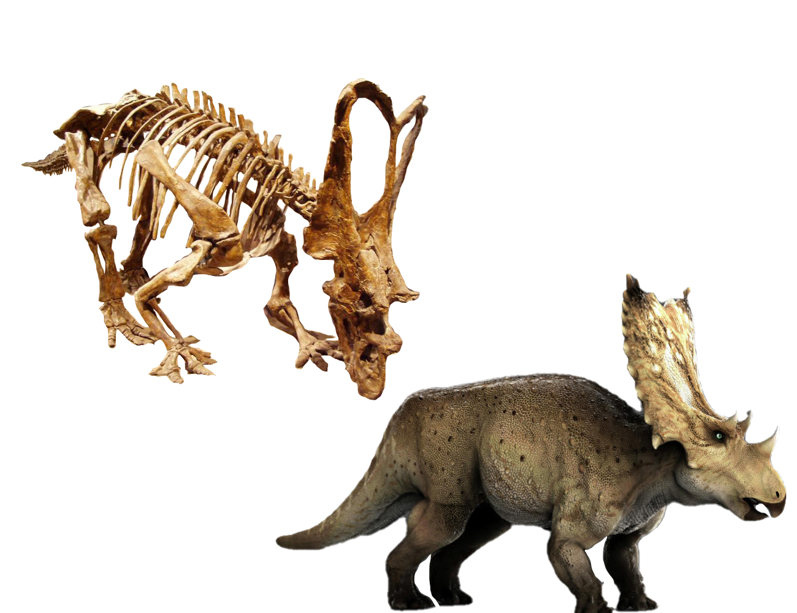

Native Dinosaurs of Texas
The History of the Planet's Greatest Creatures
Dinosaur communities were separated by both time and geography. The 'Age of Dinosaurs' (the Mesozoic Era) included three consecutive geologic time periods (the Triassic, Jurassic, and Cretaceous Periods). Different dinosaur species lived during each of these three periods. For example, the Jurassic dinosaur Stegosaurus had already been extinct for approximately 80 million years before the appearance of the Cretaceous dinosaur Tyrannosaurus. In fact, the time separating Stegosaurus and Tyrannosaurus is greater than the time separating Tyrannosaurus and you.
At the beginning of dinosaur history (the Triassic Period), there was one supercontinent on Earth called Pangea. Many dinosaur types were spread across it. However, as Pangea broke apart, dinosaurs became scattered across the globe on separate continents, and new types of dinosaurs evolved separately in each geographic area Source:
USGS.gov. Pleurocoelus, Iguanadon, Alamosaurus, Tyrannosaurus, Torosaurus, and Deinonychus dominated the Texas region along with some other areas on the North American Continent. Many fossils of these creatures have been found here in the Lone Star State!
STEGOCERAS
Stegoceras means "roof-horn" after its thick-domed skull, ringed with a fringe of small spikes. It ran on its hind legs with the back held level to the ground. Its diet consisted of soft plant materials along with insects. Stegoceras was one of the smallest members of the family that includes the more well known Pachycephalosaurus. Stegoceras had tiny teeth, which were not well suited for chewing fibrous plants that most herbivorous dinosaurs ate. It may have eaten leaves, seeds, and fruits instead. They had a fairly large brain, encased in a skull dome almost 3 inches thick. Although the skull was thick, it was porous and somewhat fragile, so some scientists believe it is unlikely that they butted heads as commonly as portrayed. Other scientists believe that head-butting was a common way for these dinosaurs to compete for mates, and to to defend themselves from predators. As a Stegoceras grew older, its dome overgrew the bony shelf on the sides and back of the skull, creating the appearance of a brimmed hat.

PLEUROCOELUS
Pleurocoelus means "hollow side" because of the way its vertebrae are scooped out along the sides. This
dinosaur left its fossilized footprints in many parts of central and north-central Texas. The hind feet left huge saucerlike depressions with three claw marks up front. The front-foot tracks are smaller and resemble horseshoes. Scientists think that Pleurocoelus must have walked on the tips of its front toes which were enclosed in a kind of padded sheath. Texas designated Brachiosaur sauropod, Pleurocoelus as the official state dinosaur in 1997. But in 2007, paleontologists re-identified the bones and footprints (left in the north and central parts of Texas about 95 to 112 million years ago) as Paluxysaurus Jonesi. The dinosaur is named for the town of Paluxy in Hood County and for the Paluxy River, both of which are near the Jones Ranch site where the fossils of this species were discovered. In 2009 a resolution was passed to amend the name of the Lone Star state dinosaur to Paluxysaurus Jonesi. it is estimated that this dinosaur measured 70 feet long and 12 feet high at the shoulder, and weighed as much as 20 tons.

TYRANNOSAURUS
Tyrannosaurus means "tyrant lizard" from its impressive size and appearance. This dinosaur probably traveled alone or in pairs to hunt down weak individuals among herds of duck-billed or horned dinosaurs. Carrion (dead meat) was also eaten. The huge 4-foot-long head, with 6-inch-high steak-knife teeth, was the main weapon of attack, while the tiny yet powerful forearms served as grappling hooks. The head of a T. rex was the real stuff of nightmares. This fierce carnivore was optimally built for crunching through its meals, with a stiff skull that allowed it to channel all the force of its muscles into one bite—delivering up to six tons of pressure. This dinosaur used its 60 serrated teeth, each about eight inches long, to pierce and grip flesh, throwing prey into the air and swallowing it whole. To keep itself from overheating while crushing prey with its mighty jaws, the giant animal had vents in its head to help its brain stay cool, similar to those found in alligators.

CHASMOSAURUS
Chasmosaurus means "chasm lizard" from the wide openings in the bony neck frill. (These openings were covered
with skin). This dinosaur, like all horned dinosaurs, traveled in herds and cropped low vegetation with its toothless beak. Behind the beak were teeth that meshed together like scissor-blades to slice up the cropped food. Rival males fought each other with their horns. The elongated frill of Chasmosaurus had two large fenestra in the middle which would have had a skin covering in life giving the appearance of a 'solid' frill. As a display device the frill may have been brightly coloured with an elaborate display. Also since the frill in these parts was soft tissue, Chasmosaurus may have flushed blood into the area to make the colours even more vivid. The flushing of blood has also brought forth ideas of a possible heat exchange device for thermoregulation, with blood flushed into the area to allow it to cool across a larger surface area. However, because the large fenestrae were filled only with skin, the frill would have provided only minimal defence against a predator. Chasmosaurus has also been used as the base for the name of the ceratopsian group Chasmosaurinae.
